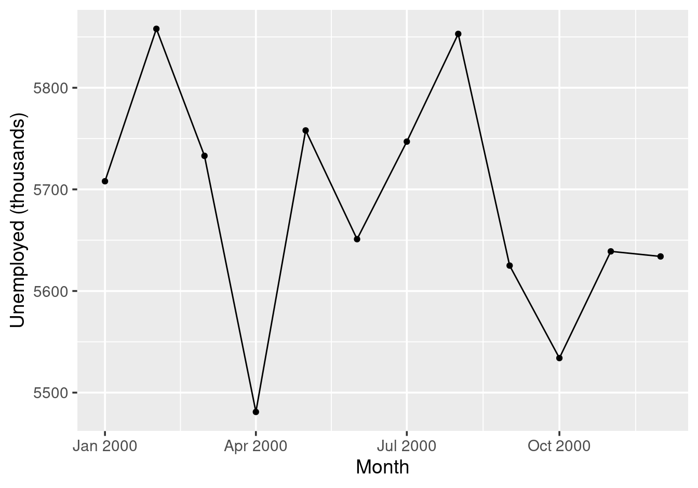

10 Interactive Visualisation
10.1 Shiny basics
Shiny is an R package for building interactive web applications directly from R, with no web-development knowledge required. A Shiny app has two main components:
- UI (user interface): defines the layout, input controls, and output placeholders shown in the browser.
- Server: R code that reacts to user inputs and produces outputs (plots, tables, text, etc.).
The central idea is reactivity: whenever the user changes an input, the server automatically re-runs the relevant code and updates the displayed output.
10.1.1 Minimal structure
A Shiny app lives in a single file conventionally named app.R:
library(shiny)
ui <- fluidPage(
# input controls and output placeholders go here
)
server <- function(input, output, session) {
# reactive code goes here
}
shinyApp(ui = ui, server = server)fluidPage()creates a responsive, fluid layout.- The
serverfunction receives three arguments:input(current values of all UI controls),output(a list to write rendered outputs into), andsession(session-level information, rarely needed directly). shinyApp()ties the UI and server together and launches the app.
To run the app, open app.R in RStudio and click Run App, or call
shiny::runApp() in the console. The app opens in your default browser or in
the RStudio Viewer pane.
10.2 Toggles and controls
Shiny provides many input widgets that collect user choices and make them
available in the server via the input object:
| Function | Description |
|---|---|
sliderInput() |
A draggable slider for numeric (or date) values |
selectInput() |
A dropdown menu |
checkboxInput() |
A single checkbox (returns TRUE/FALSE) |
checkboxGroupInput() |
A group of checkboxes (returns a character vector) |
radioButtons() |
Mutually exclusive radio buttons |
textInput() |
A free-text entry box |
numericInput() |
A numeric entry box with up/down arrows |
In this module we focus on sliderInput() and selectInput(); the others
behave similarly and are self-explanatory from the table above.
Every widget shares three key arguments:
inputId: the name used in the server to read this input’s value (e.g.input$year).label: the text label shown above the control.- A value-specific argument for the initial value (usually called
value).
10.2.1 sliderInput()
For selecting a year from a numeric range, sliderInput() is the natural
choice:
sliderInput(
inputId = "year",
label = "Select year:",
min = 1968,
max = 2014,
value = 2000, # initial value when the app loads
step = 1 # move one year at a time
)In the server, the currently selected year is read as input$year.
10.2.2 plotOutput() and renderPlot()
To display a plot, pair plotOutput() in the UI with renderPlot() in the
server. The outputId in plotOutput() must match the name used on the left
of output$... in the server:
# in the UI:
plotOutput("my_plot")
# in the server:
output$my_plot <- renderPlot({
# ggplot2 code here
})10.3 A complete example
We now build a Shiny app using ggplot2::economics, which records monthly US
economic indicators from July 1967 to April 2015. The variables include:
date: date of observation (monthly)pce: personal consumption expenditure (billion USD)pop: total US population (thousands)psavert: personal savings rate (%)uempmed: median duration of unemployment (weeks)unemploy: number of unemployed (thousands)
The app provides a slider to select a year and displays a line-and-point plot
of the monthly unemployment count (unemploy) over date for that year.
10.3.1 Step 1: get the static plot right
Before adding interactivity, write the ggplot2 code for a fixed year to
confirm the plot looks correct:
economics |>
filter(year(date) == 2000) |>
ggplot(aes(x = date, y = unemploy)) +
geom_line() +
geom_point() +
labs(x = "Month", y = "Unemployed (thousands)")
Figure 10.1: Monthly US unemployment count in 2000.
Because date is a proper Date column, ggplot2 formats the axis labels
automatically. After filtering to a single year, there are twelve monthly
data points joined by a line.
10.3.2 Step 2: replace the fixed year with a reactive input
The complete app produces two plots side by side, both driven by the same
year slider: the unemployment line-and-point plot from Step 1, and a
scatterplot of the personal savings rate (psavert) against the median
unemployment duration (uempmed) for the same year.
Inside each renderPlot() block, always follow this two-step pattern:
- Filter first — create a named data subset for the selected input.
- Plot second — pass that subset to
ggplot().
This keeps the plot code clean and makes it easy to see exactly what data each plot is using.
library(shiny)
library(ggplot2)
library(dplyr)
library(lubridate)
ui <- fluidPage(
title = "MAS2908 Data Visualisation - Interactivity Demonstration",
sliderInput(
inputId = "year",
label = "Select year:",
min = 1968,
max = 2013,
value = 2000,
step = 1
),
fluidRow(
column(width = 6, plotOutput("unemploy_plot")),
column(width = 6, plotOutput("savings_plot"))
)
)
server <- function(input, output, session) {
output$unemploy_plot <- renderPlot({
econ_year <- economics |> filter(year(date) == input$year)
ggplot(econ_year, aes(x = date, y = unemploy)) +
geom_line() +
geom_point(size = 3) +
theme_bw(20) +
labs(x = "Month", y = "Unemployed (thousands)")
})
output$savings_plot <- renderPlot({
econ_year <- economics |> filter(year(date) == input$year)
ggplot(econ_year, aes(x = psavert, y = uempmed)) +
geom_point(size = 3) +
theme_bw(20) +
labs(x = "Personal savings rate (%)",
y = "Median unemployment duration (weeks)")
})
}
shinyApp(ui = ui, server = server)fluidRow()arranges its children in a horizontal row; eachcolumn(width = 6, ...)takes half the page (Bootstrap uses a 12-unit grid, so two columns of width 6 fill the row).- Both
renderPlot()calls read the sameinput$year: when the slider moves, both plots update simultaneously. - Inside each
renderPlot(), the filtered data is stored in a local object (econ_year) before being passed toggplot(). - Moving to 2008–2009 reveals the sharp rise in unemployment alongside a simultaneous uptick in savings as households cut spending during the financial crisis.
10.4 selectInput()
A sliderInput() is ideal for a continuous numeric range with many possible
values. When the number of choices is smaller, or when choices are text labels
rather than numbers, a selectInput() (dropdown menu) is often clearer.
As an alternative to the year slider above, the year can be chosen from a dropdown list:
selectInput(
inputId = "year",
label = "Select year:",
choices = 1968:2014,
selected = 2000
)The rest of the app — the server function, both renderPlot() calls, and
input$year — is identical. Only the input widget in the UI changes.
This illustrates an important principle: different input types can achieve
the same result, and the choice between them is purely about usability.
One obvious alternative is numericInput(), which displays a text box with
up/down arrows; it too uses input$year in the server without any other
changes.
When deciding which widget to use, let the number of choices guide you:
| Scenario | Recommended widget |
|---|---|
| Continuous numeric range (many values) | sliderInput() |
| Short list of numbers or text (2–5 options) | radioButtons() |
| Longer list (6+ options) | selectInput() |
| Free numeric entry | numericInput() |
| Multiple simultaneous selections | checkboxGroupInput() |